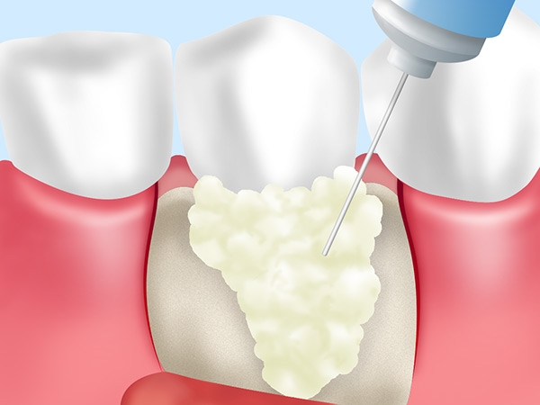

歯を失うことにつながります
～歯周病～
歯周病は、日本の成人の約80％がかかっている、もしくは予備軍であるといわれるほど蔓延していて、日本の成人が歯を失う原因の第1位の病気です。早期発見・早期治療が大切ですが、初期段階は痛みなどの自覚症状がないため、静かに進行し、発見が遅れて重症化しやすいという特徴があります。三島駅・下土狩駅の近くの歯医者「MI総合歯科クリニック」では、歯周病の治療や予防に力を入れています。「歯ぐきが腫れている」「ブラッシングのときに出血する」など気になる症状がある方はお早めにご相談ください。
歯周病の進行と治療法
歯周病は進行の段階によって治療内容が異なります。ご自身で簡単にできる「歯周病チェック」をお試しください。歯周病の段階ごとの歯周病治療法をご紹介します。
自分でできる歯周病チェック
当てはまる症状をチェックしてください。合計数によって、現在のお口の状態や歯周病の可能性をご確認いただけます。実際の診断には歯科医院での精密検査が必要です。お早めにお問い合わせください。
- 朝起きたときに口の中がネバネバする
- ブラッシングをすると歯ぐきから出血する
- 歯と歯の間に物が詰まりやすくなった
- 口臭が気になる
- 硬い物を咬むと歯に痛みが走る
- 歯ぐきから血が出ている
- 歯ぐきが腫れて、赤・紫色になっている
- 歯ぐきが下がった気がする（歯が長くなった気がする）
- 歯ぐきにむずかゆさがある
- 歯ぐきから膿が出はじめた
- 指や舌で歯を触るとグラグラ動く
| 0個 | 問題ありません |
|---|---|
|
歯ぐきは健康な状態です。この状態を維持できるように、日々のデンタルケアを怠らないようにしましょう。 |
|
| 1～3個 | 注意が必要です |
|---|---|
|
軽度の歯周炎～中等度の歯周病が進行している可能性があります。これ以上の進行を食い止めるために早めに当院までお越しください。 |
|
| 4～7個 | すぐに治療を受けましょう |
|---|---|
|
歯周病が中等度まで進行している可能性があります。早めに治療を受けないと重度化してしまうかもしれません。できるだけ早く当院にご相談ください。 |
|
| 8個以上 | 歯が抜け落ちてしまうかもしれません |
|---|---|
|
歯周病がすでに重症化している可能性が高いです。できるだけ早く当院にお越しください。場合によっては抜歯を避けられるかもしれません。 |
|
歯周病治療メニュー
当院が行っている歯周病治療メニューをご紹介します。初期段階であれば外科的な処置は不要ですので、お早めにご来院ください。
初期段階の歯周病治療
スケーリング
スケーリング
ご自宅でのブラッシングだけでは落としきれない歯石を、専用器具で除去します。
中等度の歯周病治療
ルートプレーニング
ルートプレーニング
キュレットと呼ばれる専用器具を使い、スケーリングで落としきれない歯周ポケットの中の歯石を取り除きます。処置後は表面を滑らかに仕上げ、汚れの再付着を防ぎます。
重度の歯周病治療
フラップ手術

フラップ手術
局部麻酔を施したあと、歯ぐきを切開して歯根を露出させ、こびりついたプラークや歯石、また歯周病菌に感染した組織を除去します。
歯周組織再生療法

歯周組織再生療法
溶けてしまったあごの骨、歯根膜などの組織再生を目的とした療法のひとつです。歯周組織再生材料を歯根の表面に塗布し、歯肉の侵入を防ぎながら、歯周組織の再生を促進します。
GTR法
GTR法
歯周組織再生療法と同様、歯周組織再生を目指した治療法のひとつです。歯ぐきを切開して歯石を除去したあと、そこに生まれたスペースへ「メンブレン」という特殊な膜を挿入し、歯肉の侵入を防ぎながら、骨や歯根膜などの歯周組織が再生するのを待ちます。歯周組織再生療法と併用することが多い処置です。
早期回復を実現するレーザー治療
当院では、ストリークレーザーを用いたレーザー治療による歯周病治療も実施しています。ストリークレーザーを使えば、歯や歯ぐきの間に入り込んでいる歯周病菌の的確な除去が可能です。また、歯ぐき切開をする必要がないため、痛みを最小限に抑えながら治療ができ、治療後の早期回復にもつなげられます。